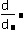
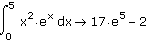

Derivatives and Integrals |
You can symbolically evaluate derivatives and indefinite or definite integrals of functions, using operators from the Calculus toolbar and the symbolic equal sign.
| Derivatives |
To take the derivative of a function, use the derivative button on the Calculus toolbar. For example, to take the derivative of sin(x):



| Integrals |
To take the indefinite integral of a function, use the indefinite integral button on the Calculus toolbar. For example, to take the indefinite integral of x2·ex:
Click on the Calculus toolbar to insert the indefinite integral operator as shown below.
To take the definite integral of the same function, from 0 to 5, click the definite integral button on the Calculus toolbar to insert the definite integral operator, as shown below.
Type 0 in the placeholder at the bottom of the integral sign. Type 5 in the placeholder at the top of the integral sign. Then repeat Steps 2-5 above. The result is shown below:

| Cauchy Principal Value |
The Cauchy principal value of the integral about a point c, in the interval (a, b), is defined by

The purpose of the Cauchy principal value is to define the value of the integral when the function f has a singular point at c. For example, the following integral has a singular point at c = 0.
To find the Cauchy principal value of the integral, add the modifier "cauchy."